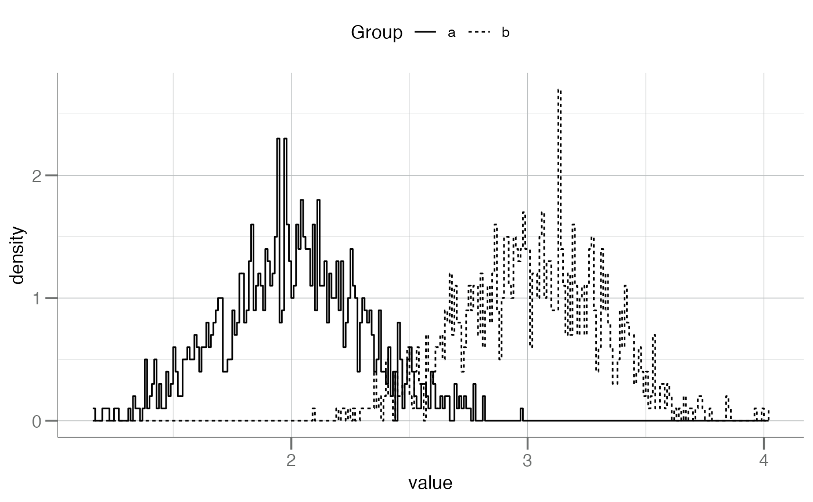
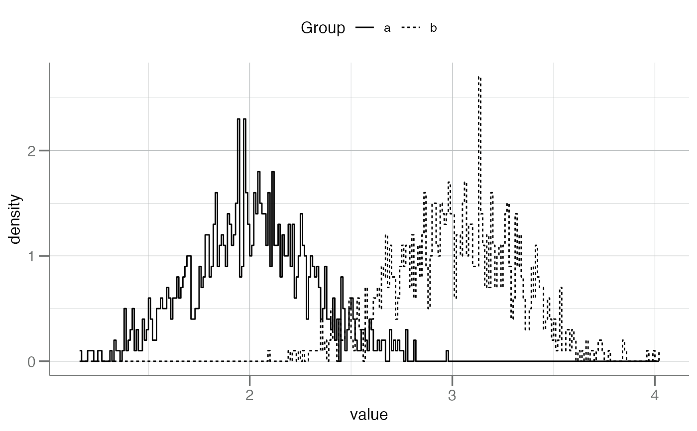

Plots two density histograms side-by-side.
Usage
plotDoubleHist(
data,
cols,
label = "Group",
x.lab = "value",
binwidth = 0.05,
main = NULL,
outline = FALSE
)Arguments
- data
A 2-column
data.frameof numeric data to be plotted as a paired density histogram. The column names of thedata.frameare used as the group names for the plot.- cols
Character. A vector of colors for the groups/boxes. For
plotDoubleHist(), must belength = 2.- label
Character. A label for the grouping variable.
- x.lab
Character. Optional string for the x-axis. Otherwise one is automatically generated (default).
- binwidth
Numeric. Set the bin width for the histogram bars. See
geom_histogram().- main
Character. Main title for the plot. See
ggtitle()forggplot2style graphics.- outline
Logical. Black and white outlines of the histograms.
Examples
dat <- withr::with_seed(123, data.frame(a = rnorm(1000, 2, 0.3),
b = rnorm(1000, 3, 0.3)))
plotDoubleHist(dat)
plotDoubleHist(dat, label = "Grouped By", main = "Two Distributions")
 plotDoubleHist(dat, label = "Grouped By", main = "Black & White", outline = TRUE)
plotDoubleHist(dat, binwidth = 0.01)
plotDoubleHist(dat, binwidth = 0.01, outline = TRUE)

plotDoubleHist(dat, label = "Grouped By", main = "Black & White", outline = TRUE)
plotDoubleHist(dat, binwidth = 0.01)
plotDoubleHist(dat, binwidth = 0.01, outline = TRUE)
